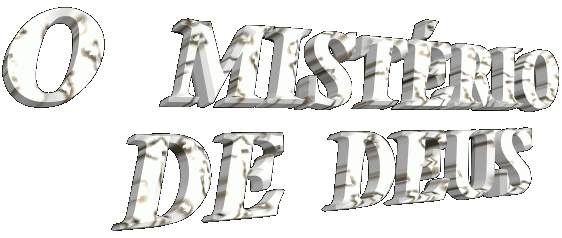
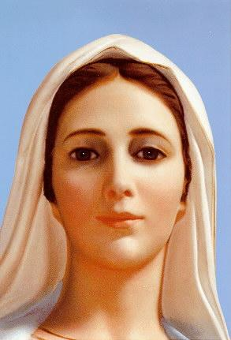

Um melhor conhecimento do CRIADOR para que ELE seja mais amado e louvado por todos os seus filhos; os Mistérios Divinos: Pecado Original, a Criação, Redenção e Salvação da Humanidade; Mistério da Graça; Mistério da Santíssima Trindade.


=ÍNDICE =